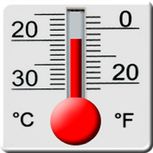

can be confusing!!

• How many milimeters are in an inch?
• How many kilometers are there in 23.2 miles?
• What is 200.3 degrees Fareheit in Celcius?

Bill Wolf
| °F to °C | Subtract 32, multiply by 5, then divide by 9 |
| °C to °F | Multiply by 9, divide by 5, then add 32 |
| mile to kilometer | Divide miles by 0.62137 |
| kilometer to mile | Multiply kilometers by 0.62137 |

miles<-23.2
kilometers<-miles/0.62137
print(round(kilometers,digits=2))
## [1] 37.34
farenheit<-200.3
celcius<- (farenheit - 32) * 5 / 9
print(round(celcius,digits=2))
## [1] 93.5